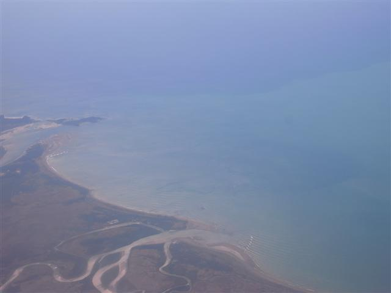
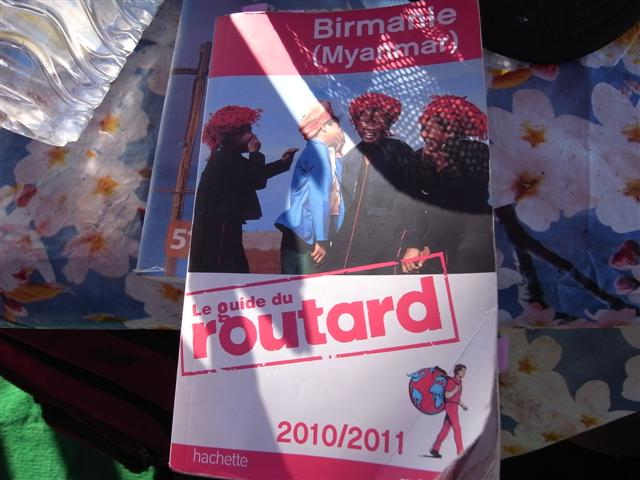
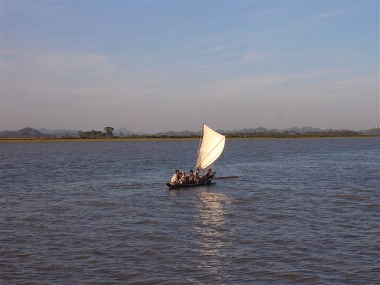

～Circling Stars～
今天十分緊張，因為出發去此行最想去的 Mrauk U，但卻充滿未知，雖然已訂好機票去 Yangon 然後再去 Sittwe，但是到達 Sittwe 後如何呢？書本說因為數年前一隻載遊客由 Sittwe 去 Mrauk U 的船遇上風暴，幾位遊客身亡，政府已經禁止外國人在下午出海。而飛機是早上十一時半從 Yangon 開出，真不知到達時還可否出海，不然就要在 Sittwe 過宿，但是，昨晚打電話到 Sittwe 的各旅館，都已經滿房了...
天未光離開 Inn Wa Guest House，坐馬車到機場，馬車較的士便宜。旅館職員給我的早餐中，除了麵包香蕉，還有雞蛋一隻。
在機場又再遇上渡邊君，我們也是坐同一班機 Bagan Air，到達 Yagoon 後，和他道別，我繼續留在機場，等候去 Sittwe 的班機。
不論是等辦登機證，還是在候機室等待的時候，我都不斷留意在場的遊客。去 Sittwe 的班機一再延遲，看見一班又一班的乘客離去。我不時數著剩下多少個外地遊客，然後胡思亂想「這裏兩個，那邊三個，加上我剛好六個，夠坐一條船。噢，好像又多了一個，若果他們全都去包一條船，我便落單了，但其實，根本沒船去...」諸如此類，我就是這樣神經質地想完又想。
我這個死都不想把行李托運的人，遇上這些內陸機，機頂行李箱細到只容下公事包，今次超慘地要把大背包放在坐位下，雙腳唯有夾著它，我坐的一行還要坐滿人，動彈不得，但前後兩行卻竟然坐得一個人。
只有一小時多點的機程都很難過，不久前才由北飛向南，現在又再由南飛向北。當飛機飛到緬甸西面的沿海地帶，那些河的出口，淺水地帶，淺籃色海水，好美好美，但心情再緊張起來。
著陸了，來到等行李的地方，我沒有行李可等，卻不敢離開，如何是好？慢慢地行到出口的地方，看見佷多的人，一位穿制服的人正在和另一個遊客談話，我走過去，他看見我，問我是否坐船去 Mrauk U，我點頭，他說 20 美元一位。
20 美元？真的嗎？不敢相信，旅遊書說分分鐘要 120 美元來回，還要下午沒有船。現在，一切都不同了，即刻有船，還要只用 20 美元，制服人更笑著和我說，無論有多少人坐，都只收二十元一位。我一口答應，也鬆了口氣。同機的遊客，似乎都沒有料到可以即時出發，所以一早便訂好 Sittwe 的住宿，明早才去。反而得我一個，另加一個法國老人，乘這條船。
其實法國老人也打算先在 Sittwe 留宿的，只不過他沒想過會沒有旅館有房位了。我們坐車由機場去渡頭途中，一起去他想入主的 Mya Guest House，訂好數天後的住宿。
同車的一位當地小子說，他們是以水為生的，什麼也取之於水，到處都是河，河和海養活這裏的人。
制服人把我們帶到一隻船收錢後便離開。我們很開心地到附近買點食糧然後等開船，但不知船什麼問題開不動，幾個船員在修理。等到下午三時多船終於能開，這船只有法國老人和我兩位乘客，但有船掌和船員共有三個，我們都很奇怪，為何可以每人 20 美元就能成船。
不管如何，真的能去了，心情超開心的，什麼都覺得很好，剛才同車的小子曾說我很好運，今天水位很高，水流又順，很可以四個小時就能到達。我們百無聊籟，拍照，說笑，吃東西，傾計，比較大家的旅遊書。
說起旅遊書，法國老人用的是 routard 出版的，沒有英文版，比較之下，資料比 Lonely Planet 的好和新，只是地圖方面 LP 仍然是強項，但明顯現在越來越多好選擇，LP 早已不是獨樹一幟。
船駛到中途突然死火，摩打好像又壞了，又再搶修了差不多一個小時，船才超慢地行，天開始黑，越來越冷，所以，雖然水位高，水流順，但原本四小時的船，變了七小時。
雖然好像很多阻滯，但今天是我此行最開心的一天，因為，能乘這船，我看見我看過最美麗的黃昏，以及最美麗的星空。當船在海中，四周沒有高的東西阻礙，但遠處卻是山和海，這種三百六十度廣闊的觀景很特別，日落後，四周天邊的紅色燈色漸漸地變，變成紫藍色，很美麗。到了天全黑，更感動，這是我第一次，看見天上可以有這麼多，這麼密的星，我不知日後何時才再看得到了。
船慢行了很久很久，十一時多才到達 Mrauk U。我們到 Royal City Guest House，但這地方只有一間雙人房，法國老人要了，我走去 Golden Star Guest House。Golden Star 完全不同，很簡陋的旅館，不過，館主一家很友善，而且這裏的氣氛很好，吃飯的地方就在入口的空間。今晚是除夕，他們更請我吃晚餐。
我的房間，應該是最簡陋的一間，當我推門進入，空間很細小，還有青蛙一隻在跳，之後失去蹤影。一張床，蚊帳，一張小木檯，坐廁，只得冷水花灑。但我卻在這裏留了四夜，我很喜歡這間旅館和這裏的人。


